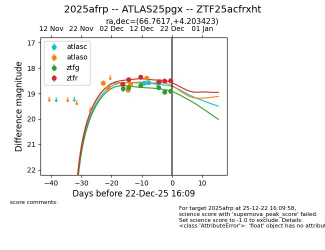
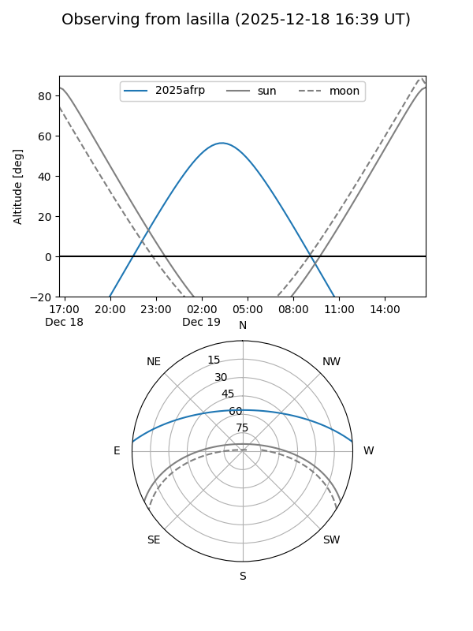
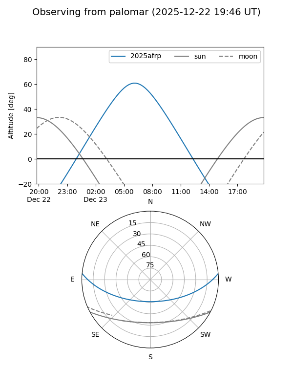
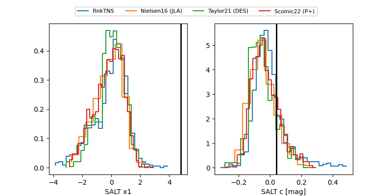

2025afrp
Target 2025afrp at 2025-12-31 18:00
Aliases and brokers:
FINK: link
Lasair: link
ALeRCE: link
TNS: link
YSE: link
alt names
ZTF25acfrxht (ztf,fink_ztf)
2025afrp (tns,yse)
ATLAS25pgx (atlas)
Coordinates:
equatorial (ra, dec) = 66.7617,+4.20342
equatorial (HMS+DMS) = 04:27:02.80,+04:12:12.32
galactic (l, b) = (190.4700,-29.30885)
Flags:
Photometry:
last atlasc=18.58, atlaso=18.38, ztfg=18.91, ztfr=18.43
3 atlasc, 5 atlaso, 6 ztfg, 7 ztfr detections
Lightcurve

Visibility


Additional plots
